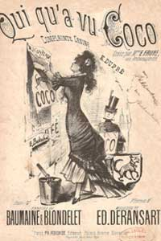

Gabrielle early life
Having learned the art of sewing during her six years at Aubazine, Chanel was able to find employment as a seamstress.
She sang in a cabaret frequented by cavalry officers. It was at this time that Gabrielle acquired the name "Coco", possibly based on a popular song "Qui qu'a vu Coco".
The nickname Coco also stand for an allusion to the French word Cocotte, which means for kept woman. As cafe entertainer, Chanel radiated a juvenile allure that tantalized the military habitués of the cabaret.

This is where she meets her first supporter, friend and lover: Etienne Balsan.